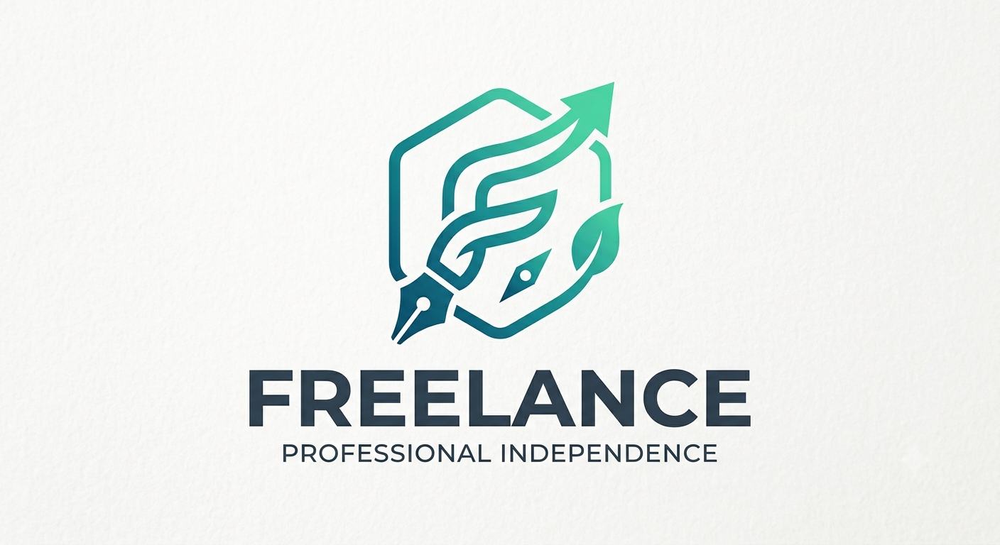
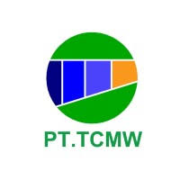
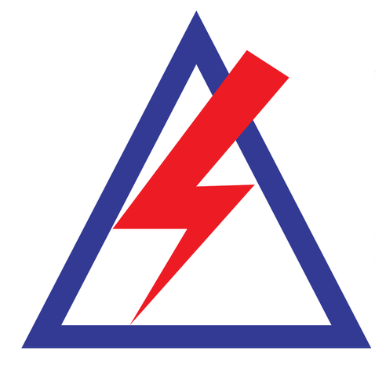
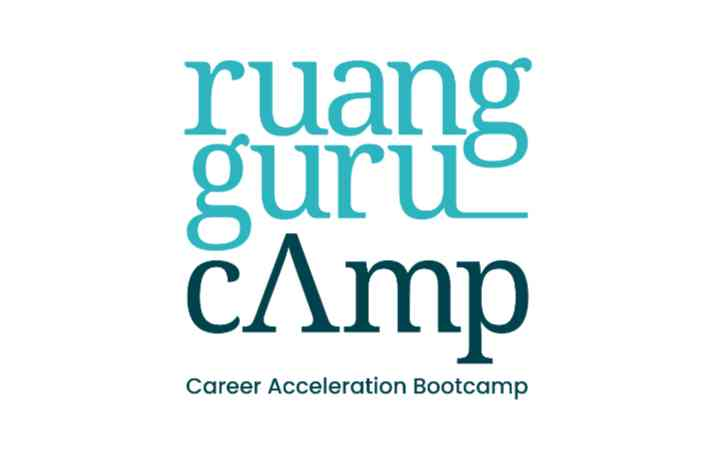

Kantor Kita
An office you can explore.
An interactive four-floor virtual office for a 13-person team. Explore the building, follow team routines, and manage tasks from the office interface.
- JavaScript
- Three.js
- Node.js
Medan
Andrea Micola Azwir
Frontend Engineer
PT Inovasi Jelajah Dunia
Medan, IndonesiaAMA
Frontend engineering · Web & mobile
A curious mind. A builder at heart.
I’m Andrea, a frontend engineer building web and mobile apps, with a background in data analysis.
Currently building at PT Inovasi Jelajah Dunia
Selected work05
An office you can explore.
An interactive four-floor virtual office for a 13-person team. Explore the building, follow team routines, and manage tasks from the office interface.
Where to stay, and how to get there.
A geographic information system that ranks accommodation in Banda Aceh with Multi-Attribute Utility Theory, then finds the shortest route from your location to the chosen place with the A* algorithm.
A folk tale you can play.
A 2D platformer inspired by the Si Kancil folk tale, playable in the browser and on Android. Run through four levels, cross the river on crocodiles' backs, and listen to a gamelan soundtrack. Every sprite and sound is generated in code.
Plan the trip, then book it.
A travel agency website with a 3D island on the home page, destination search and filters, package pages with a gallery and booking requests, and a travel journal. An admin dashboard manages packages, articles, and booking status.
A farm crew that takes orders.
A 3D farming game prototype inspired by Hay Day. Give the crew orders in plain English and Claude turns them into standing rules for three farmers, settles problems like a fallen tree or a full barn, and writes their daily diary. The game engine handles movement, stock, and time.
About
I’m a frontend engineer at PT Inovasi Jelajah Dunia, where I build the company’s travel eSIM mobile app and website with React Native, Next.js, and TypeScript. I graduated in Informatics from Malikussaleh University in 2024, and a background in data analysis still shapes how I think about products.
From freelance projects to product teams, I care about the details that make an application feel clear and easy to use.
Experience
Different roles. New perspectives.
Something to take from every chapter.




Toolbox
Certificates
Contact
Have an idea, a question,
or something interesting in mind?
Interactive web
An interactive four-floor virtual office for a 13-person team. Explore the building, follow team routines, and manage tasks from the office interface.
JavaScript · Three.js · Node.js
View the source codeResearch
A geographic information system that ranks accommodation in Banda Aceh with Multi-Attribute Utility Theory, then finds the shortest route from your location to the chosen place with the A* algorithm.
Laravel · MySQL · Leaflet.js · MAUT · A*
View the source codeInteractive web
A 2D platformer inspired by the Si Kancil folk tale, playable in the browser and on Android. Run through four levels, cross the river on crocodiles' backs, and listen to a gamelan soundtrack. Every sprite and sound is generated in code.
TypeScript · HTML5 Canvas · Web Audio · Capacitor
View the source codeInformation system
A travel agency website with a 3D island on the home page, destination search and filters, package pages with a gallery and booking requests, and a travel journal. An admin dashboard manages packages, articles, and booking status.
Laravel · Vue 3 · Inertia.js · Three.js
View the source codeInteractive web
A 3D farming game prototype inspired by Hay Day. Give the crew orders in plain English and Claude turns them into standing rules for three farmers, settles problems like a fallen tree or a full barn, and writes their daily diary. The game engine handles movement, stock, and time.
JavaScript · Three.js · Node.js · Claude API
View the source codeCertificate / 2022
PT Ruang Raya Indonesia: responsive interfaces with HTML, CSS, JavaScript, and React.
Open certificateCertificate / 2023–24
Coursera · Digitalent · Kominfo: data cleaning, analysis, and visualization.
Open certificate